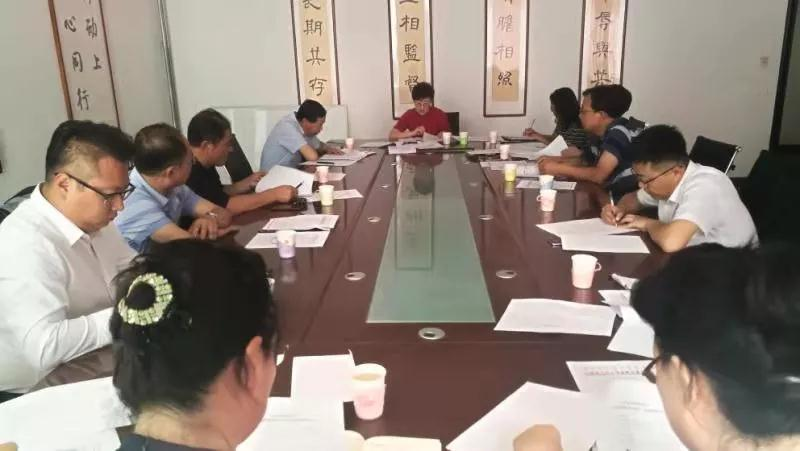
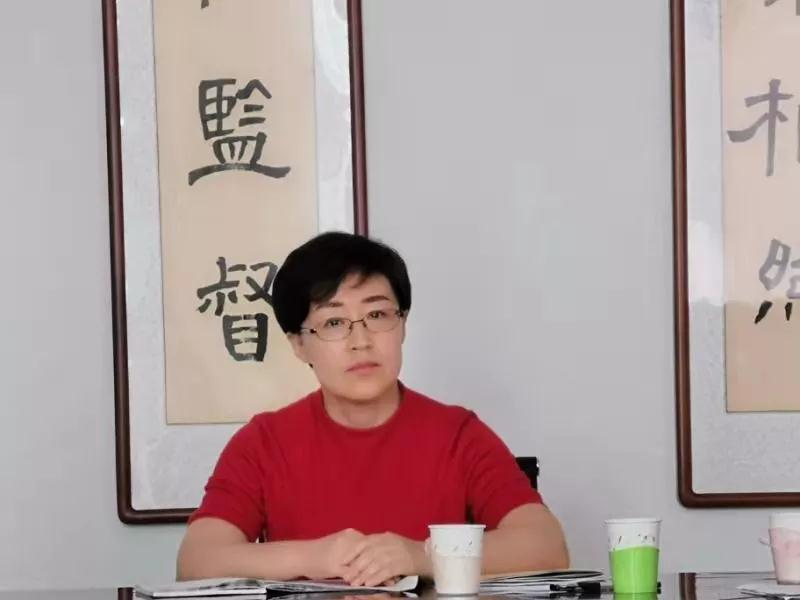

9月7日，农工党赤峰市委主委、赤峰市政府副市长李艳茹主持召开农工党赤峰市委员会六届十五次全委扩大会议。

会议传达了农工党中央《关于开展廉洁风险预警提示活动的通知》，农工党自治区委《关于开展“不忘合作初心，继续携手前进”主题教育活动方案》、《关于开展“同心健康环保科技行”构建大扶贫格局助力全区脱贫攻坚实施方案》、《关于创建“农工党党员之家”实施方案》；赤峰市委统战部关于《认真学习贯彻习近平总书记考察内蒙古重要讲话精神》的通知，通报了统战部关于《组建统一战线“同心团队”开展“同心”社会服务活动实施方案。
会议商讨了市委会制定的贯彻落实“不忘合作初心，继续携手前进”主题教育活动为内容的《发挥本党界别优势助力脱贫攻坚——全体党员下基层》具体实施的方案，对于主题教育活动的内容、动员部署、下基层送药义诊、启动仪式的召开等内容进行详实的安排部署。对创建“农工党党员之家”从选址到室内设置、宣传展示、活动内容等方面进行全面部署。

李艳茹主委指出：一是各支部主委根据这次会议精神组织全体党员认真贯彻落实好统战部关于“学习贯彻习近平总书记考察内蒙古重要讲话精神”，通过学习树立“四个意识”，坚定“四个自信”，切实提高理论素养和履职能力。二是学懂弄通“不忘合作初心、继续携手前进”主题教育活动的目标和任务，通过学习加强理论武装、巩固政治共识、强化责任担当、推进自身建设，从而更好履职尽责。三是根据农工党界别优势，结合农工党区委关于开展“同心健康环保科技行”构建大扶贫格局助力全区脱贫攻坚实施方案，按照我们市委会制定的“全体党员大下乡”活动方案，做好对全市因病致贫返贫的前20个乡镇，开展疾病普查、送医送药、健康大讲堂、结对帮扶活动，真正做到问需于民、服务于民。四是根据”全体党员大下乡“活动的调研结果形成数据准确、分析详实、可操作性强的调研报告，为领导科学决策提供依据。五是努力将“农工党党员之家”真正建设成为广大党员的“思想家园”、“精神家园”、“学习家园”、“履职家园”和“活动家园”，并争创“农工党党员之家”优秀示范园。